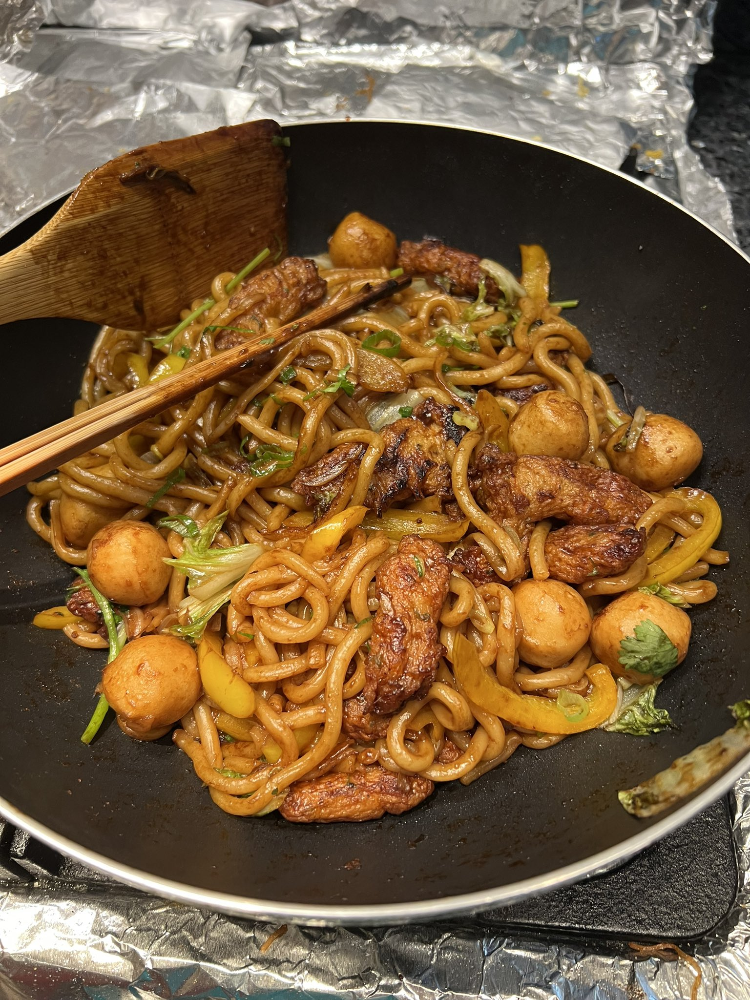

Stir-Fry Udon

Description
A simple noodle dish incorporating udon noodles with any meat and vegetables of your choice, perfect for lunch or dinner.
Ingredients
- 3 packs of udon
- 1 scallion, with white and green parts separated
- 3 cloves of garlic
- 250 g pork or any meat of choice
- 250 g cabbage or any vegetable of choice
- Sauce
- 1 tbsp soy sauce
- 1.5 tbsp dark soy sauce
- 2 tbsp oyster sauce
- 1 tsp sugar
- 1 tsp sesame oil
Steps
- Cut up cabbage and pork into long strips.
- Mince garlic and scallion.
- Boil udon for according to package instructions and quickly transfer to ice bath.
- Prepare sauce and mix well.
- In a heated pan, add oil and the white part of the scallion.
- Add pork and cook until browned.
- Add cabbage and cook until softened.
- Add udon noodles and stir.
- Add sauce and stir until the color is evenly spread.
- Garnish with green onions before serving.
Back